library(tidyverse)
library(corrplot)
library(rpart)
library(rpart.plot)
library(GGally)
library(dummy)
library(caret)
library(performanceEstimation)
library(pROC)
library(glmnet)
library(yardstick)
library(DALEX)Problem Set 4
#The National Veterans Organization (NVO) needs help analyzing donor responses to previous collection efforts. They’d like to improve the amount of responses they get, as well as the response rate. They’ve provided some historical data from their database that you can use to analyze and build a classification model predicting whether a person will respond to a mailing.
#1. Write a paragraph explaining why classification is the right approach for the NVO’s problem.
Classification is the right approach for the National Veterans Organization’s (NVO) problem because it allows them to categorize potential donors into two distinct groups: those who are likely to respond to their mailing and those who are not. By predicting whether a person will respond to a mailing, the NVO can target their outreach efforts more effectively. This approach enables them to allocate their resources efficiently and personalize their communication strategies. With classification, they can identify individuals who are most receptive to their cause and tailor their messages and incentives accordingly.
#2. Write a paragraph explaining how NVO could use the classifier you build to identify potential donors. Why could it be better than what they’ve been doing?
The classifier built by NVO can be used to identify potential donors in a more efficient and targeted manner than their previous methods. By utilizing the classifier, NVO can prioritize individuals who are predicted to have a higher likelihood of responding to their mailings. This approach can save both time and resources by focusing on the most promising prospects, ensuring that their outreach efforts are more cost-effective. Instead of sending mail to a broad and undifferentiated audience, they can direct their campaigns to individuals with a higher probability of becoming donors, increasing the chances of successful fundraising.
#3. Write a paragraph explaining which measures from the confusion matrix you’ll use to evaluate the classifier performance and how they relate to important areas like mailer response rate, and maximizing donation opportunities.
To evaluate the performance of the classifier, NVO should consider measures from the confusion matrix, particularly precision, recall, and the F1 score. Precision will help NVO understand what proportion of the predicted positive responses were indeed correct, ensuring that their resources are not wasted on false positives. Recall, on the other hand, will show how many of the actual donors they successfully captured, preventing missed opportunities. Maximizing donation opportunities is crucial for the NVO, and the F1 score, which balances precision and recall, provides a comprehensive measure of the classifier’s effectiveness. These metrics help the NVO improve their mailer response rate by reducing false positives and false negatives, ultimately enhancing their fundraising success.
#After perusing and cleaning the data, decide on the most useful features and build the two classification models - remembering to follow proper principles (i.e., data partitioning, cross validation, etc.).
donors_orig <- read.csv("donors.csv")
donors <- read.csv("donors.csv")head(donors) age numberChildren incomeRating wealthRating mailOrderPurchases
1 60 NA NA NA 0
2 46 1 6 9 16
3 NA NA 3 1 2
4 70 NA 1 4 2
5 78 1 3 2 60
6 NA NA NA NA 0
totalGivingAmount numberGifts smallestGiftAmount largestGiftAmount
1 240 31 5 12
2 47 3 10 25
3 202 27 2 16
4 109 16 2 11
5 254 37 3 15
6 51 4 10 16
averageGiftAmount yearsSinceFirstDonation monthsSinceLastDonation
1 7.741935 8 14
2 15.666667 3 14
3 7.481481 7 14
4 6.812500 10 14
5 6.864865 11 13
6 12.750000 3 20
inHouseDonor plannedGivingDonor sweepstakesDonor P3Donor state urbanicity
1 FALSE FALSE FALSE FALSE IL town
2 FALSE FALSE FALSE FALSE CA suburb
3 FALSE FALSE FALSE FALSE NC rural
4 FALSE FALSE FALSE FALSE CA rural
5 TRUE FALSE FALSE TRUE FL suburb
6 FALSE FALSE FALSE FALSE AL town
socioEconomicStatus isHomeowner gender respondedMailing
1 average NA female FALSE
2 highest TRUE male FALSE
3 average NA male FALSE
4 average NA female FALSE
5 average TRUE female FALSE
6 average NA <NA> FALSEsummary(donors) age numberChildren incomeRating wealthRating
Min. : 1.00 Min. :1.00 Min. :1.000 Min. :0.00
1st Qu.:48.00 1st Qu.:1.00 1st Qu.:2.000 1st Qu.:3.00
Median :62.00 Median :1.00 Median :4.000 Median :6.00
Mean :61.61 Mean :1.53 Mean :3.886 Mean :5.35
3rd Qu.:75.00 3rd Qu.:2.00 3rd Qu.:5.000 3rd Qu.:8.00
Max. :98.00 Max. :7.00 Max. :7.000 Max. :9.00
NA's :23665 NA's :83026 NA's :21286 NA's :44732
mailOrderPurchases totalGivingAmount numberGifts smallestGiftAmount
Min. : 0.000 Min. : 13.0 Min. : 1.000 Min. : 0.000
1st Qu.: 0.000 1st Qu.: 40.0 1st Qu.: 3.000 1st Qu.: 3.000
Median : 0.000 Median : 78.0 Median : 7.000 Median : 5.000
Mean : 3.321 Mean : 104.5 Mean : 9.602 Mean : 7.934
3rd Qu.: 3.000 3rd Qu.: 131.0 3rd Qu.: 13.000 3rd Qu.: 10.000
Max. :241.000 Max. :9485.0 Max. :237.000 Max. :1000.000
largestGiftAmount averageGiftAmount yearsSinceFirstDonation
Min. : 5 Min. : 1.286 Min. : 0.000
1st Qu.: 14 1st Qu.: 8.385 1st Qu.: 2.000
Median : 17 Median : 11.636 Median : 5.000
Mean : 20 Mean : 13.348 Mean : 5.596
3rd Qu.: 23 3rd Qu.: 15.478 3rd Qu.: 9.000
Max. :5000 Max. :1000.000 Max. :13.000
monthsSinceLastDonation inHouseDonor plannedGivingDonor sweepstakesDonor
Min. : 0.00 Mode :logical Mode :logical Mode :logical
1st Qu.:12.00 FALSE:88709 FALSE:95298 FALSE:93795
Median :14.00 TRUE :6703 TRUE :114 TRUE :1617
Mean :14.36
3rd Qu.:17.00
Max. :23.00
P3Donor state urbanicity socioEconomicStatus
Mode :logical Length:95412 Length:95412 Length:95412
FALSE:93395 Class :character Class :character Class :character
TRUE :2017 Mode :character Mode :character Mode :character
isHomeowner gender respondedMailing
Mode:logical Length:95412 Mode :logical
TRUE:52354 Class :character FALSE:90569
NA's:43058 Mode :character TRUE :4843
(apply(X = is.na(donors), MARGIN = 2, FUN = sum)) age numberChildren incomeRating
23665 83026 21286
wealthRating mailOrderPurchases totalGivingAmount
44732 0 0
numberGifts smallestGiftAmount largestGiftAmount
0 0 0
averageGiftAmount yearsSinceFirstDonation monthsSinceLastDonation
0 0 0
inHouseDonor plannedGivingDonor sweepstakesDonor
0 0 0
P3Donor state urbanicity
0 0 2316
socioEconomicStatus isHomeowner gender
2316 43058 4676
respondedMailing
0 sum(!complete.cases(donors))[1] 88455Dealing with missing values
Our dataset contains numerous missing values, with 88,455 out of 95,412 observations displaying at least one missing value. To handle this, we’ll opt for median imputation for continuous variables like age. For categorical variables, we’ll either remove columns or substitute NA values with the most prevalent class.
Specifically, the variables with missing values are:
Numerical variable with NA: age Categorical variables with NA: numberChildren (mostly NA values), income rating, wealth rating (approximately half NA values), urbanicity, socioEconomicStatus, isHomeowner (about half NA values), gender
summary(donors$age) Min. 1st Qu. Median Mean 3rd Qu. Max. NA's
1.00 48.00 62.00 61.61 75.00 98.00 23665 histogram(donors$age)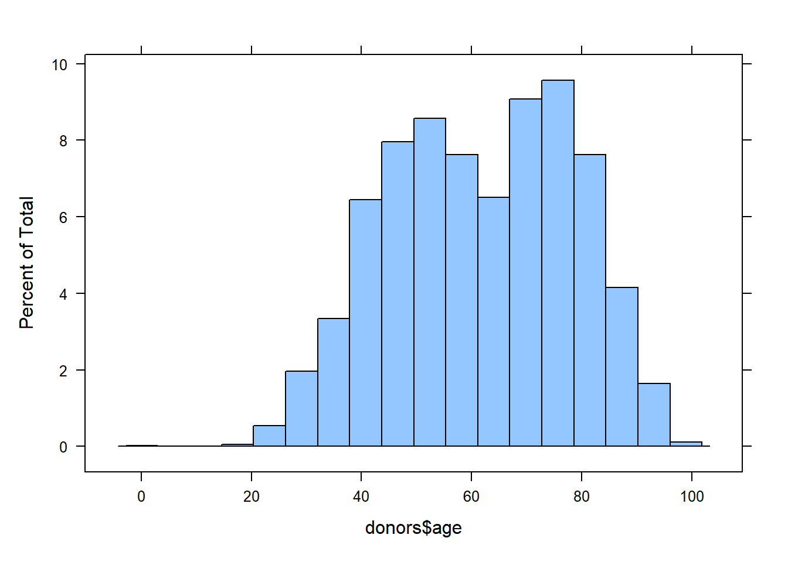
median imputation for age variable:
donors <- donors %>%
mutate(age = ifelse(is.na(age),
median(age, na.rm = TRUE),
age))summary(donors$age) Min. 1st Qu. Median Mean 3rd Qu. Max.
1.00 52.00 62.00 61.71 71.00 98.00 histogram(donors$age)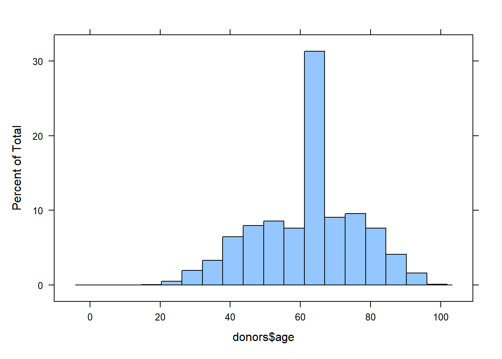
EDA for categorical variables with NA’s:
isHomeowner
donors %>%
count(isHomeowner, respondedMailing) isHomeowner respondedMailing n
1 TRUE FALSE 49646
2 TRUE TRUE 2708
3 NA FALSE 40923
4 NA TRUE 2135The response rate stands at 5.17% for isHomeowner being True, while it’s 4.96% for NA values within isHomeowner. Notably, the sole existing value for isHomeowner is True. Even considering the NA values as a distinct category, the response rates for both groups don’t show significant differences. Therefore, it’s advisable to remove the column.
donors <- donors %>%
select(-isHomeowner)numberChildren
donors %>%
count(numberChildren) numberChildren n
1 1 7792
2 2 3110
3 3 1101
4 4 316
5 5 59
6 6 7
7 7 1
8 NA 83026Most of the values for numberChildren are missing. I will drop the column.
donors <- donors %>%
select(-numberChildren)incomeRating
incomePred <- donors %>%
count(incomeRating, respondedMailing) %>%
group_by(incomeRating) %>%
mutate(count = sum(n)) %>%
group_by(respondedMailing) %>%
mutate(respRate = n/count) %>%
filter(respondedMailing == TRUE)
incomePred# A tibble: 8 × 5
# Groups: respondedMailing [1]
incomeRating respondedMailing n count respRate
<int> <lgl> <int> <int> <dbl>
1 1 TRUE 376 9022 0.0417
2 2 TRUE 632 13114 0.0482
3 3 TRUE 423 8558 0.0494
4 4 TRUE 640 12732 0.0503
5 5 TRUE 812 15451 0.0526
6 6 TRUE 431 7778 0.0554
7 7 TRUE 426 7471 0.0570
8 NA TRUE 1103 21286 0.0518histogram(donors$incomeRating)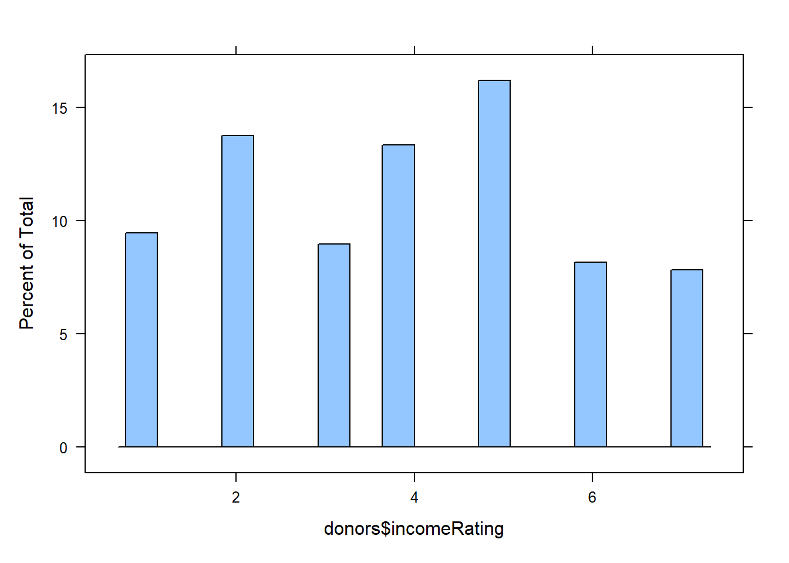
plot(x = incomePred$incomeRating, y = incomePred$respRate)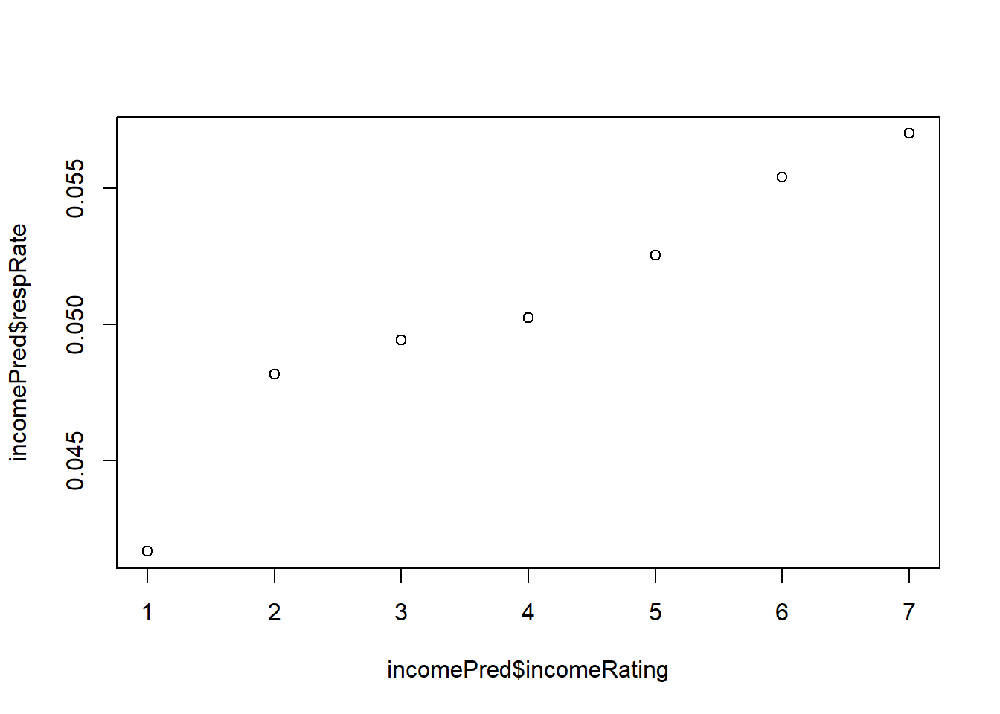
IncomeRating displays a positive correlation with the response rate, warranting the retention of this variable despite its considerable number of NA values. Interestingly, the response rate for the NA values falls between the response rates for incomeLevel 4 and 5, with 5 being the most prevalent value. Substituting the NA values with the mode appears to be a confident approach, unlikely to significantly impact our model’s performance.
donors <- donors %>%
mutate(incomeRating = ifelse(is.na(incomeRating),
5,
incomeRating))
histogram(donors$incomeRating)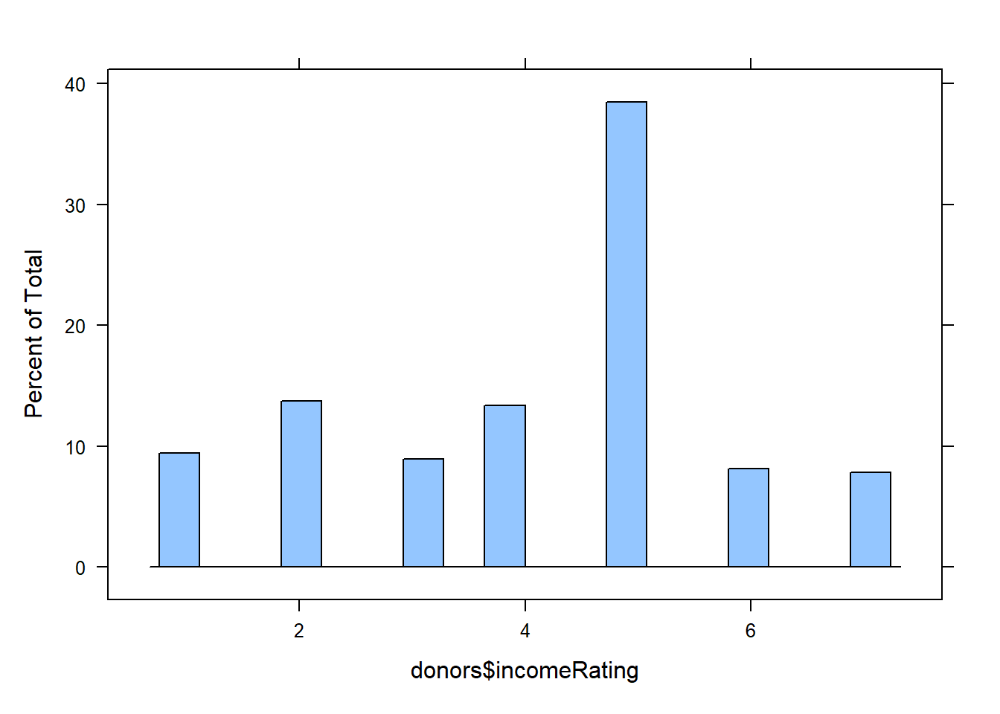
wealthRating
wealthPred <- donors %>%
count(wealthRating, respondedMailing) %>%
group_by(wealthRating) %>%
mutate(count = sum(n)) %>%
group_by(respondedMailing) %>%
mutate(respRate = n/count) %>%
filter(respondedMailing == TRUE)
wealthPred# A tibble: 11 × 5
# Groups: respondedMailing [1]
wealthRating respondedMailing n count respRate
<int> <lgl> <int> <int> <dbl>
1 0 TRUE 111 2413 0.0460
2 1 TRUE 162 3454 0.0469
3 2 TRUE 202 4085 0.0494
4 3 TRUE 216 4237 0.0510
5 4 TRUE 237 4810 0.0493
6 5 TRUE 254 5280 0.0481
7 6 TRUE 323 5825 0.0555
8 7 TRUE 330 6198 0.0532
9 8 TRUE 350 6793 0.0515
10 9 TRUE 423 7585 0.0558
11 NA TRUE 2235 44732 0.0500histogram(donors$wealthRating)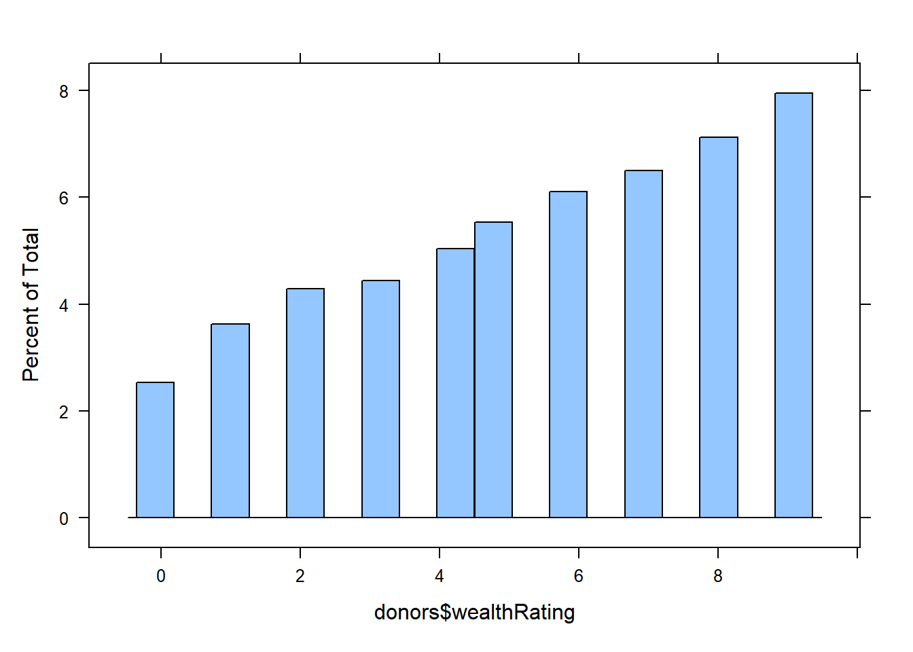
plot(x = wealthPred$wealthRating, y = wealthPred$respRate)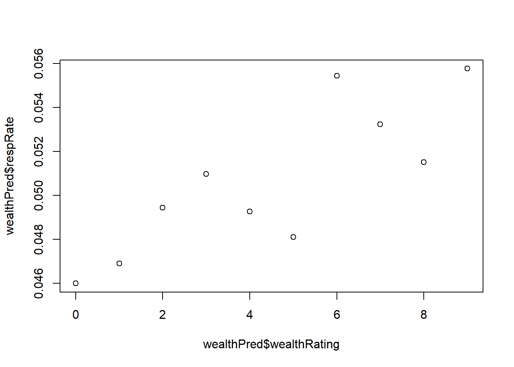
Deciding whether to impute or exclude this column presents a nuanced challenge compared to the previous scenario. WealthRating demonstrates a positive correlation with the response rate, albeit with more variability compared to IncomeRating. Notably, the mode of the WealthRating variable is 9, the highest possible value, yet the response rate for the NA values differs from that of the 9’s.
Considering multicollinearity, WealthRating and IncomeRating might seem synonymous, yet in our dataset, our donors likely consist of older individuals, often veterans, possibly retired with low income but substantial wealth from retirement accounts and other investments. This discrepancy explains the distinct distributions between WealthRating and IncomeRating. Including both won’t introduce multicollinearity. However, the variable socioEconomicStatus could potentially overlap with WealthRating, raising multicollinearity concerns.
Ultimately, I’ve chosen to exclude the column.
donors <- donors %>%
select(-wealthRating)urbanicity, socioEconomicStatus, gender
Regarding three categorical variables with relatively low proportions of NA (missing) values, imputation’s impact on model accuracy is less concerning. Opting for mode imputation across these variables will be the chosen approach.
#getmode <- function(v) {
#uniqv <- unique(v)
#uniqv[which.max(tabulate(match(v, uniqv)))]
#}
donors <- donors %>%
mutate(urbanicity = if_else(is.na(urbanicity),
"unknown",
urbanicity)) %>%
mutate(socioEconomicStatus = if_else(is.na(socioEconomicStatus),
"unknown",
socioEconomicStatus)) %>%
mutate(gender = if_else(is.na(gender),
"unknown",
gender))State
The categorical variable State, presenting 50 levels, potentially imposes excessive influence on the model. Upon testing models both with and without State, the State-less models demonstrate significantly enhanced performance, prompting its removal.
donors <- donors %>%
select(-state)Correlation
num <- donors %>%
keep(is.numeric)
corr <- cor(num)
corrplot(corr)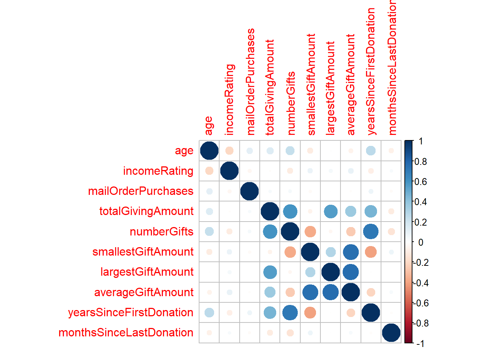
Notably, the strongest correlations exist among variables such as smallestGiftAmount, largestGiftAmount, averageGiftAmount, and between numberGifts and yearsSinceFirstDonation.
To refine the model, we’ll eliminate smallestGiftAmount, largestGiftAmount, and yearsSinceFirstDonation.
donors <- donors %>%
select(-c("smallestGiftAmount", "largestGiftAmount", "yearsSinceFirstDonation"))Scaling
Lasso models demand feature scaling to ensure their sensitivity aligns with the input feature scale
normalize <- function(x) {
return((x-min(x))/(max(x)-min(x)))
}
donors <- donors %>%
mutate_at(vars(age, mailOrderPurchases, totalGivingAmount, numberGifts, averageGiftAmount, monthsSinceLastDonation), normalize)Dummies
donors$incomeRating <- as.factor(donors$incomeRating)
donors_dummies <- dummy(donors)
donors_dummies <- donors_dummies %>%
mutate_all(as.factor)
donors_num <- donors %>% keep(is.numeric)
donors_bool <- donors %>% select(c("inHouseDonor", "plannedGivingDonor", "sweepstakesDonor", "respondedMailing"))
donors_bool <- donors_bool*1
donors_bool <- donors_bool %>%
mutate_all(as.factor)
donors_bool$respondedMailing <- as.factor(donors_bool$respondedMailing)
donors_model <- bind_cols(donors_dummies, donors_num, donors_bool)4. Build a logistic LASSO model using cross-validation on the training data to select the best $\lambda$. View the coefficients at that chosen $\lambda$ and see what features are in the model.
set.seed(567)
samp = createDataPartition(donors_model$respondedMailing, p = 0.7, list = FALSE)
lasso_train = donors_model[samp, ]
lasso_test = donors_model[-samp,]
rm(samp)#set.seed(567)
#lasso_train_down = downSample(x = select(lasso_train, -respondedMailing),
#y = lasso_train$respondedMailing,
#yname = "respondedMailing")
#lasso_train_down %>% select(respondedMailing) %>% table()set.seed(567)
lasso_train_smote <- smote(respondedMailing ~ .,
data = lasso_train,
perc.under = 2,
perc.over = 3)
lasso_train_smote %>%
select(respondedMailing) %>%
table() respondedMailing
0 1
20346 13564 #separate predictors and outcome
x <- model.matrix(respondedMailing~., lasso_train_smote)[,-1]
y <- lasso_train_smote$respondedMailingset.seed(123)
cv.lasso <- cv.glmnet(x, y, alpha = 1, family = "binomial")
model <- glmnet(x, y, alpha = 1, family = "binomial",
lambda = cv.lasso$lambda.min)
#regression coefficients
coef(model)31 x 1 sparse Matrix of class "dgCMatrix"
s0
(Intercept) 4.916170e-01
incomeRating_11 -2.379194e-01
incomeRating_21 -1.523994e-01
incomeRating_31 -1.018186e-01
incomeRating_41 .
incomeRating_51 6.201833e-02
incomeRating_61 8.782742e-02
incomeRating_71 7.080376e-02
urbanicity_city1 -1.026712e-02
urbanicity_rural1 -4.696075e-02
urbanicity_suburb1 1.352039e-02
urbanicity_town1 1.314608e-03
urbanicity_unknown1 2.057639e-01
urbanicity_urban1 .
socioEconomicStatus_average1 .
socioEconomicStatus_highest1 1.237479e-01
socioEconomicStatus_lowest1 -1.793663e-01
socioEconomicStatus_unknown1 1.100613e-02
gender_female1 -8.587326e-04
gender_joint1 3.051161e-01
gender_male1 4.245793e-03
gender_unknown1 -2.075170e-02
age 1.009256e-01
mailOrderPurchases 2.691465e-01
totalGivingAmount -1.396638e+00
numberGifts 2.553341e+00
averageGiftAmount -2.659985e+01
monthsSinceLastDonation -1.188682e+00
inHouseDonor1 -2.519843e-01
plannedGivingDonor1 6.570808e-01
sweepstakesDonor1 -6.825118e-01#preds
x_test <- model.matrix(respondedMailing ~., lasso_test)[,-1]
probabilities <- model %>% predict(newx = x_test, type="response")
predicted_classes <- ifelse(probabilities > .5, "1", "0")
#accuracy
observed_classes <- lasso_test$respondedMailing
paste0("Model Accuracy: ", mean(predicted_classes == observed_classes))[1] "Model Accuracy: 0.882782475019216"Our model achieves an 88.3% final accuracy, incorporating all variables with non-zero coefficients. Adjusting the threshold below 0.5 would enable more positive predictions, beneficial when aiming to identify numerous potential donors from a restricted list. In this scenario, with the assumption of an almost limitless donor base, maximizing precision becomes pivotal to enhance the campaign’s response rate.
plot(cv.lasso)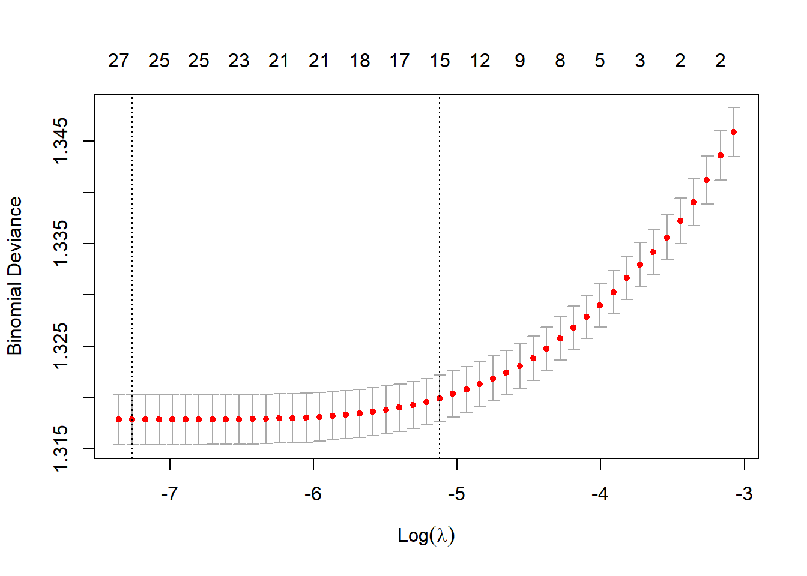
cv.lasso$lambda.min[1] 0.0007022933The optimal \(\lambda\) is .00070.
coef(cv.lasso, cv.lasso$lambda.min)31 x 1 sparse Matrix of class "dgCMatrix"
s1
(Intercept) 4.926730e-01
incomeRating_11 -2.378738e-01
incomeRating_21 -1.523719e-01
incomeRating_31 -1.017770e-01
incomeRating_41 .
incomeRating_51 6.199029e-02
incomeRating_61 8.786297e-02
incomeRating_71 7.085918e-02
urbanicity_city1 -1.072416e-02
urbanicity_rural1 -4.737981e-02
urbanicity_suburb1 1.313710e-02
urbanicity_town1 9.928947e-04
urbanicity_unknown1 2.158259e-01
urbanicity_urban1 .
socioEconomicStatus_average1 .
socioEconomicStatus_highest1 1.236654e-01
socioEconomicStatus_lowest1 -1.793007e-01
socioEconomicStatus_unknown1 5.132827e-04
gender_female1 -4.163493e-04
gender_joint1 3.055695e-01
gender_male1 4.723188e-03
gender_unknown1 -2.029743e-02
age 1.011465e-01
mailOrderPurchases 2.686140e-01
totalGivingAmount -1.269492e+00
numberGifts 2.519119e+00
averageGiftAmount -2.670599e+01
monthsSinceLastDonation -1.188647e+00
inHouseDonor1 -2.522371e-01
plannedGivingDonor1 6.543187e-01
sweepstakesDonor1 -6.825351e-01table(predicted_classes,observed_classes) observed_classes
predicted_classes 0 1
0 25055 1240
1 2115 212plot(roc.glmnet(model,
newx = x,
newy = y ),
type="l") 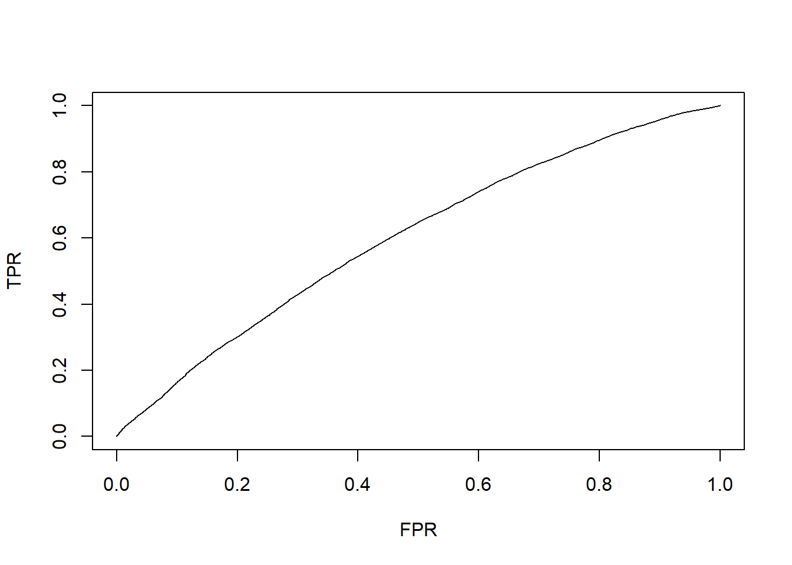
assess <- assess.glmnet(model, newx=x, newy=y)
assess$auc[1] 0.6016006
attr(,"measure")
[1] "AUC"AUC = .602
5. Build a decision tree model using cross-validation on the training data to select the best cp value. Use rpart.plot() to view the decision tree. What key features does it use?
Class Balance
donors_model %>%
select(respondedMailing) %>%
table()respondedMailing
0 1
90569 4843 There’s an imbalance in our classes, as merely 5.3% of donors responded to the mailing. It’s crucial to consider this imbalance within our model.
Data Partition
set.seed(567)
samp = createDataPartition(donors_model$respondedMailing, p = 0.7, list = FALSE)
train = donors_model[samp, ]
test = donors_model[-samp,]
rm(samp)Check class balance of test and train sets:
train %>% select(respondedMailing) %>% table() %>% prop.table()respondedMailing
0 1
0.94922893 0.05077107 test %>% select(respondedMailing) %>% table() %>% prop.table()respondedMailing
0 1
0.94926979 0.05073021 The degree of imbalance is similar.
Downsampling
set.seed(567)
train_down = downSample(x = select(train, -respondedMailing),
y = train$respondedMailing,
yname = "respondedMailing")
train_down %>% select(respondedMailing) %>% table()respondedMailing
0 1
3391 3391 set.seed(567)
train_smote = smote(respondedMailing ~ .,
data = train,
perc.under = 2,
perc.over = 1.5)
train_smote %>%
select(respondedMailing) %>%
table() respondedMailing
0 1
6782 6782 Decision Tree
ctrl = caret::trainControl(method = "repeatedcv", number = 10, repeats = 5)set.seed(567)
unbalanced_tree = train(respondedMailing ~ .,
data = train,
method = "rpart",
metric = "Kappa",
trControl = ctrl,
tuneGrid = expand.grid(cp = seq(0.0, 0.03, 0.0005)))
plot(unbalanced_tree)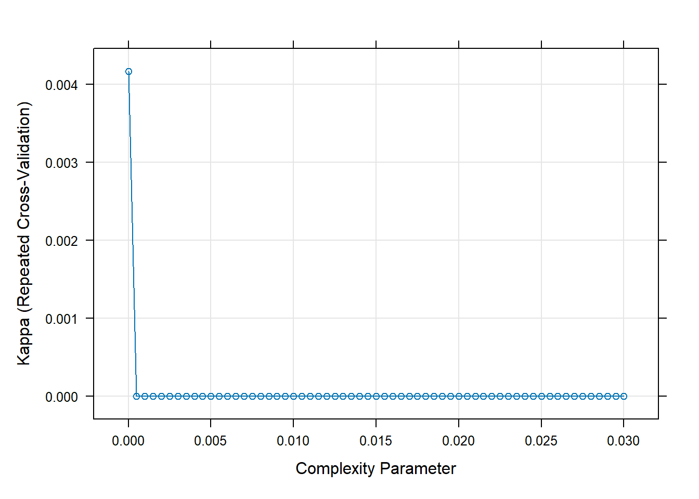
set.seed(567)
down_tree = train(respondedMailing ~ .,
data = train_down,
method = "rpart",
metric = "Kappa",
#control = rpart_ctrl,
trControl = ctrl,
tuneGrid = expand.grid(cp = seq(0.0, 0.03, 0.0005)))
plot(down_tree)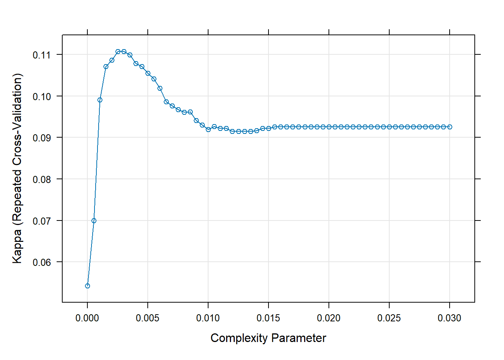
set.seed(567)
smote_tree = train(respondedMailing ~ .,
data = train_smote,
method = "rpart",
metric = "Kappa",
#control = rpart_ctrl,
trControl = ctrl,
tuneGrid = expand.grid(cp = seq(0.0, 0.03, 0.0005)))
plot(smote_tree)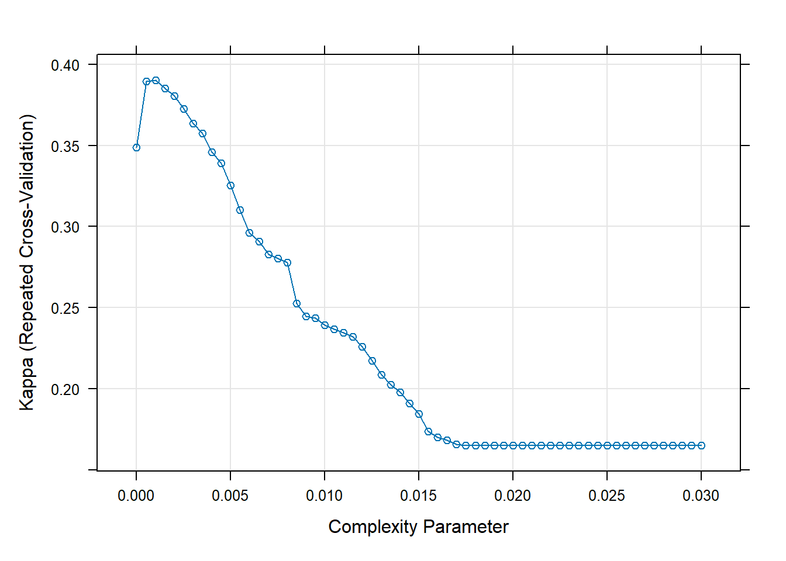
rpart.plot(unbalanced_tree$finalModel)Warning: labs do not fit even at cex 0.15, there may be some overplotting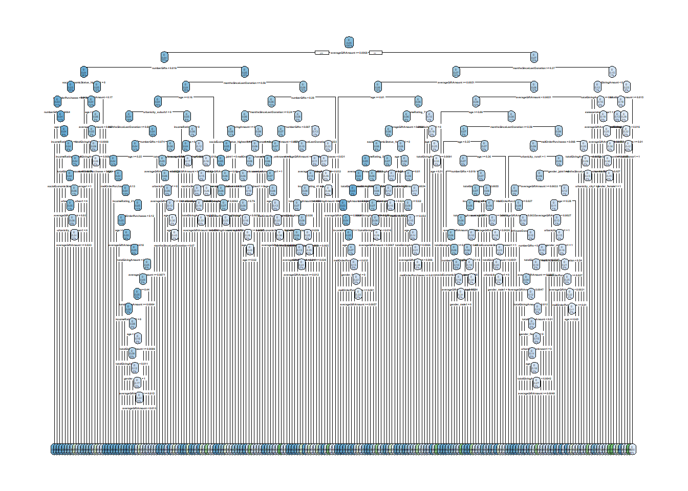
rpart.plot(down_tree$finalModel)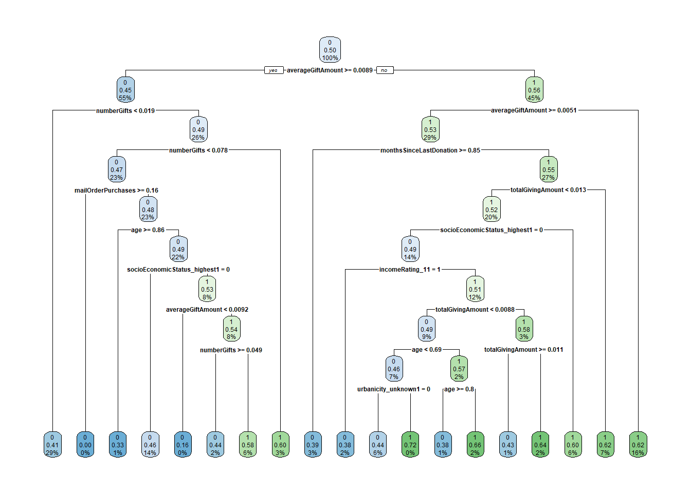
rpart.plot(smote_tree$finalModel)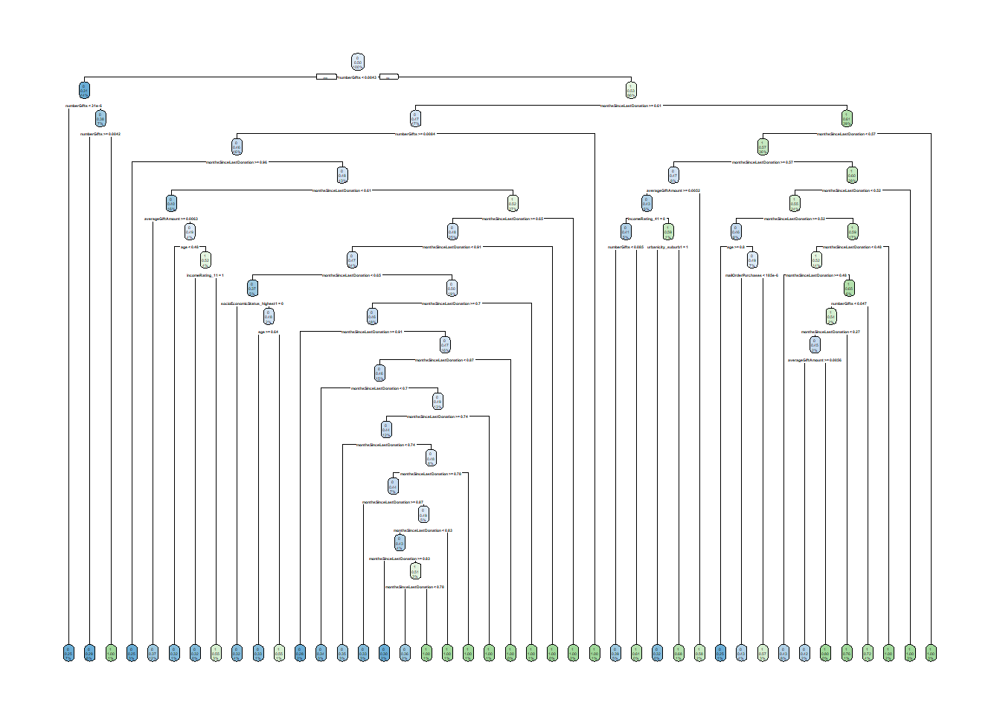
6. Evaluate the performance on test data and look at and describe its performance according to your confusion matrix measures.
Decision Trees
# Get class predictions
unbalanced_test_class = predict(unbalanced_tree, newdata = test, type = "raw")
down_test_class = predict(down_tree, newdata = test, type = "raw")
smote_test_class = predict(smote_tree, newdata = test, type = "raw")
# Get probability predictions
unbalanced_test_prob = predict(unbalanced_tree, newdata = test, type = "prob")[,2]
down_test_prob = predict(down_tree, newdata = test, type = "prob")[,2]
smote_test_prob = predict(smote_tree, newdata = test, type = "prob")[,2]pred_prob = predict(smote_tree, newdata = test, type = "prob")[,2]
pred_class = factor(ifelse(pred_prob > 0.5, "1", "0"))
confusionMatrix(pred_class, test$respondedMailing, positive = "1")Confusion Matrix and Statistics
Reference
Prediction 0 1
0 23456 1165
1 3714 287
Accuracy : 0.8295
95% CI : (0.8251, 0.8339)
No Information Rate : 0.9493
P-Value [Acc > NIR] : 1
Kappa : 0.0333
Mcnemar's Test P-Value : <2e-16
Sensitivity : 0.19766
Specificity : 0.86331
Pos Pred Value : 0.07173
Neg Pred Value : 0.95268
Prevalence : 0.05073
Detection Rate : 0.01003
Detection Prevalence : 0.13979
Balanced Accuracy : 0.53048
'Positive' Class : 1
down_prob = predict(down_tree, newdata = test, type = "prob")[,2]
down_class = factor(ifelse(down_prob > 0.5, "1", "0"))
confusionMatrix(down_class, test$respondedMailing, positive = "1")Confusion Matrix and Statistics
Reference
Prediction 0 1
0 17555 733
1 9615 719
Accuracy : 0.6385
95% CI : (0.6329, 0.644)
No Information Rate : 0.9493
P-Value [Acc > NIR] : 1
Kappa : 0.0363
Mcnemar's Test P-Value : <2e-16
Sensitivity : 0.49518
Specificity : 0.64612
Pos Pred Value : 0.06958
Neg Pred Value : 0.95992
Prevalence : 0.05073
Detection Rate : 0.02512
Detection Prevalence : 0.36105
Balanced Accuracy : 0.57065
'Positive' Class : 1
The crucial variable influencing the unbalanced and downsampled trees is the averageGiftAmount. Meanwhile, in the SMOTE tree, the pivotal factor is the numberGifts.
unbalanced_cv_kappa = mean(unbalanced_tree$results$Kappa)
unbalanced_test_kappa = confusionMatrix(unbalanced_test_class,
test$respondedMailing,
positive = "1")$overall[["Kappa"]]
unbalanced_test_auc = ModelMetrics::auc(test$respondedMailing, unbalanced_test_prob)
down_cv_kappa = mean(down_tree$results$Kappa)
down_test_kappa = confusionMatrix(down_test_class,
test$respondedMailing,
positive = "1")$overall[["Kappa"]]
down_test_auc = ModelMetrics::auc(test$respondedMailing, down_test_prob)
smote_cv_kappa = mean(smote_tree$results$Kappa)
smote_test_kappa = confusionMatrix(smote_test_class,
test$respondedMailing,
positive = "1",)$overall[["Kappa"]]
smote_test_auc = ModelMetrics::auc(test$respondedMailing, smote_test_prob)tibble("CV Kappa" = c(unbalanced_cv_kappa, down_cv_kappa, smote_cv_kappa),
"Test Kappa" = c(unbalanced_test_kappa, down_test_kappa, smote_test_kappa),
"Test AUC" = c(unbalanced_test_auc, down_test_auc, smote_test_auc),
"Tree" = c("Unbalanced", "Down", "SMOTE")) %>%
column_to_rownames(var = "Tree") CV Kappa Test Kappa Test AUC
Unbalanced 6.837495e-05 0.0007768817 0.5557561
Down 9.436004e-02 0.0362754624 0.5844020
SMOTE 2.264053e-01 0.0332979959 0.56778097. Create a ROC plot (with AUC) to compare the two model’s performance and explain to NVO what the plot tells you.
par(pty="s")
unbalanced_roc = roc(test$respondedMailing ~ unbalanced_test_prob,
plot=TRUE, print.auc=TRUE,
col="green", lwd=3, legacy.axes=TRUE)Setting levels: control = 0, case = 1Setting direction: controls < casesdown_roc = roc(test$respondedMailing ~ down_test_prob,
plot=TRUE, print.auc=TRUE, print.auc.y=0.4,
col = "red", lwd=3, legacy.axes=TRUE, add=TRUE)Setting levels: control = 0, case = 1
Setting direction: controls < casessmote_roc = roc(test$respondedMailing ~ smote_test_prob,
plot=TRUE, print.auc=TRUE, print.auc.y=0.3,
col = "yellow", lwd=3, legacy.axes=TRUE, add=TRUE)Setting levels: control = 0, case = 1
Setting direction: controls < caseslegend("bottomright", legend=c("Unbalanced Data", "Downsampled Data", "SMOTE Data"),
col = c("green", "red", "yellow"), cex = .55, lwd=3)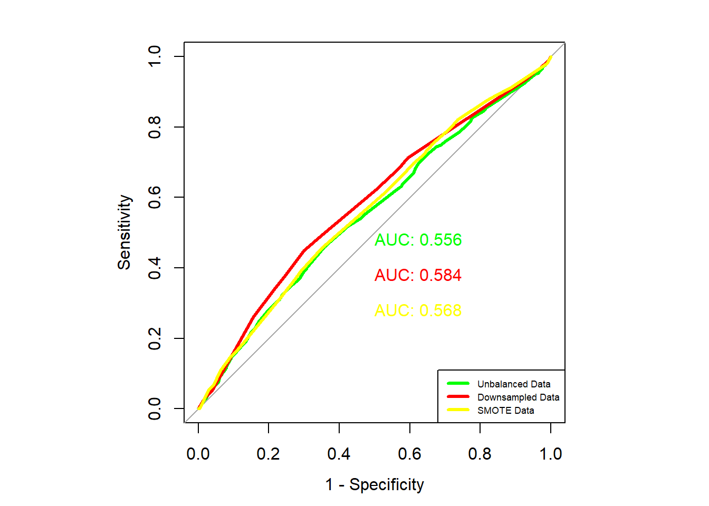
The ROC/AUC chart offers insight into the model’s ability to differentiate between positive and negative cases. An ideal ROC curve closely follows the upper-left corner of the plot, denoting a high True Positive Rate (TPR) and a low False Positive Rate (FPR). The AUC represents the area beneath this curve; a larger AUC indicates better performance, where an AUC of .5 signifies random selection and an AUC of 1 signifies flawless classification.
Among the decision trees, the highest AUC resulted from the downsampled data, registering at .576. However, this performance isn’t significantly better than random selection. Comparatively, the AUC for the lasso logistic regression model stood at .602, only slightly superior to the decision tree on downsampled data.
8. Pick the best performing model, and view its precision recall chart and its cumulative gain chart.
xy <- data.frame(x,y)
xyp <- as.data.frame(cbind(xy$y,probabilities))Warning in cbind(xy$y, probabilities): number of rows of result is not a
multiple of vector length (arg 1)xyp$V1 <- as.factor(xyp$V1)
pr_curve(xyp, V1, s0) %>%
ggplot(aes(x = recall, y = precision)) +
geom_path() +
coord_equal() +
theme_bw()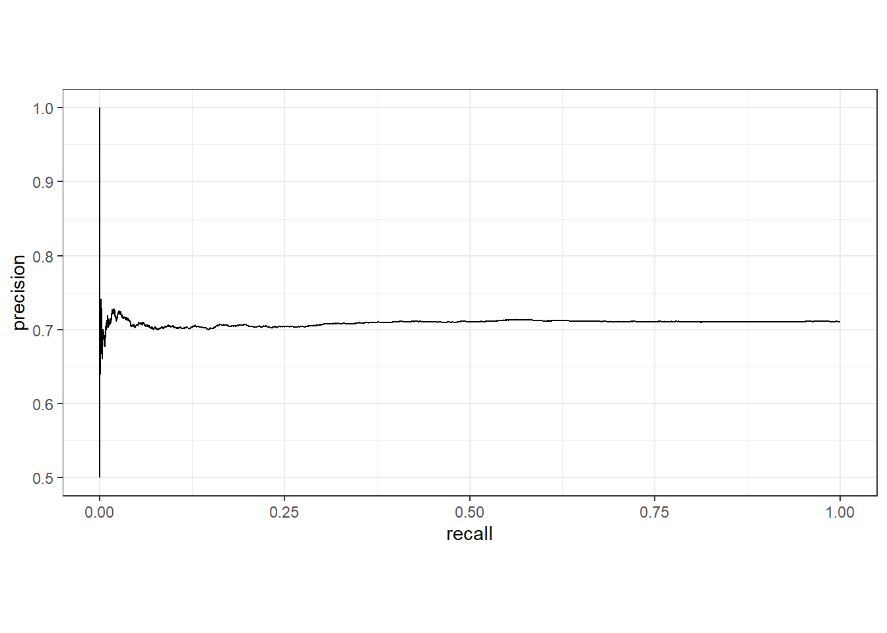
test$respondedMailing <- as.numeric(test$respondedMailing)
down_explain = DALEX::explain(model = down_tree,
data = test,
y = test$respondedMailing=="1",
type='classification')Preparation of a new explainer is initiated
-> model label : train.formula ( default )
-> data : 28622 rows 31 cols
-> target variable : 28622 values
-> predict function : yhat.train will be used ( default )
-> predicted values : No value for predict function target column. ( default )
-> model_info : package caret , ver. 6.0.94 , task classification ( default )
-> model_info : type set to classification
-> model_info : Model info detected classification task but 'y' is a logical . Converted to numeric. ( NOTE )
-> predicted values : numerical, min = 0 , mean = 0.4893528 , max = 0.72
-> residual function : difference between y and yhat ( default )
-> residuals : numerical, min = -0.72 , mean = 0.459917 , max = 1
A new explainer has been created! down_perf = DALEX::model_performance(down_explain, cutoff = 0.5)p1 = plot(down_perf, geom = "prc")
p2 = plot(down_perf, geom = "gain")
p1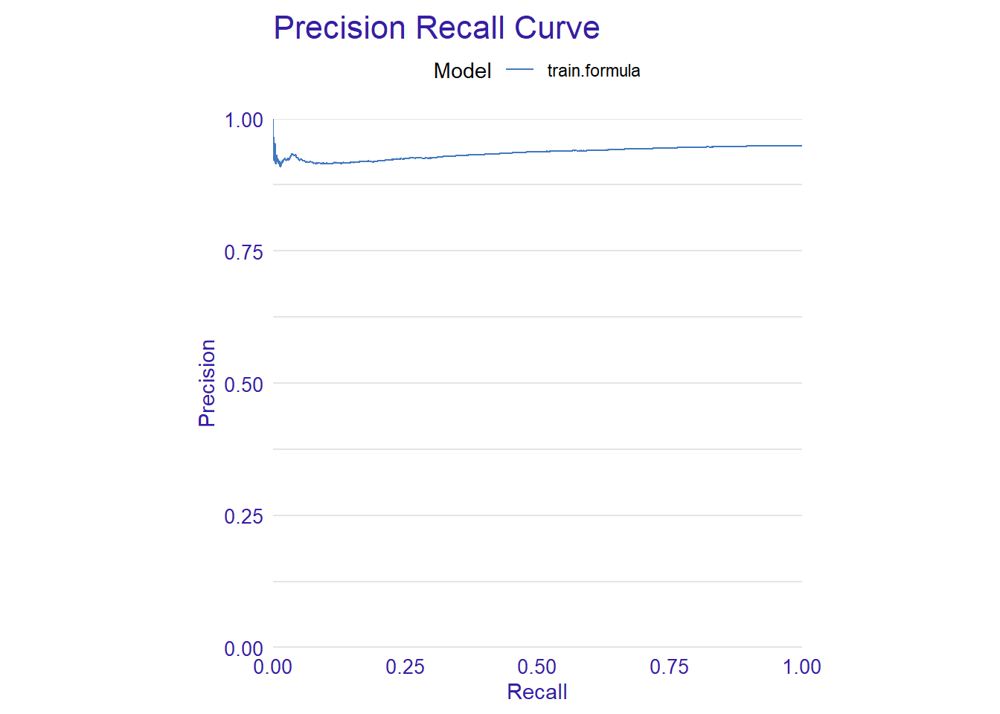
p2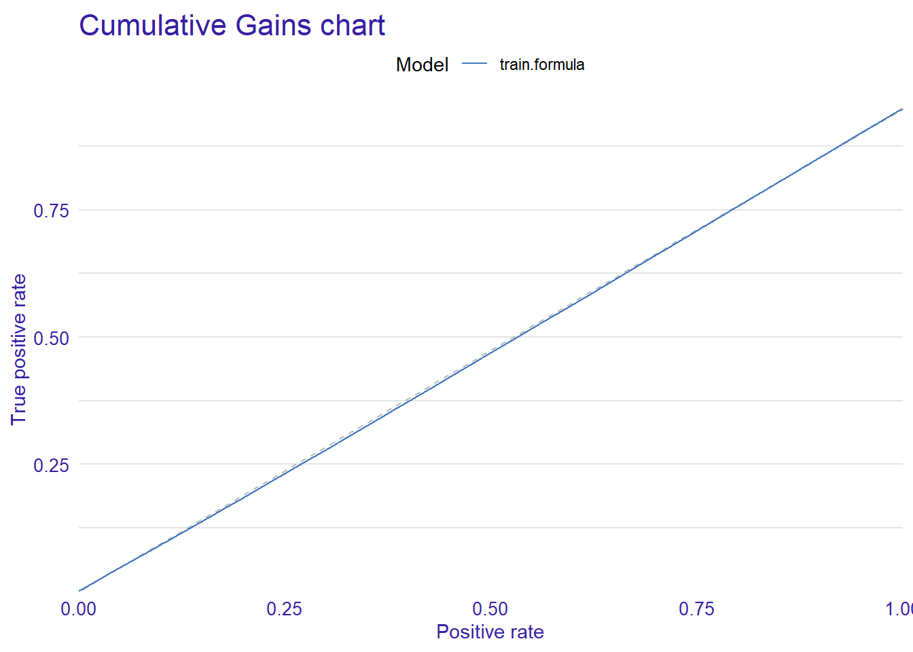
##the predict function doesn't work for my logistic regression model
#lasso_explain = DALEX::explain(model = model,
# data = lasso_test[,-1],
# y = lasso_test$respondedMailing=="1",
# type='classification')
#lasso_perf = DALEX::model_performance(lasso_explain, cutoff = 0.5)9. Use the charts from parts 6 and 7 to describe how the model should perform for NVO and what it could mean if they do a mailer campaign for 50,000 people.
mean(donors_orig$averageGiftAmount)[1] 13.34779length(which(donors_orig$respondedMailing == "TRUE")) / length(donors_orig$respondedMailing)[1] 0.05075881The standard cost for each mailer is approximately $1, while the mean average gift from donors stands at $13.35. Employing the original response rate of 5.076%, a campaign targeting 50,000 individuals would result in an expenditure of $50,000, yielding $33,882 in donations (calculated as 13.35 * 50,000 * 0.05076).
Alternatively, employing a campaign guided by a lasso logistic regression model, the response rate computes as 9.11%, calculated using the formula true positive / all predicted positives, resulting in a donation amount of $60,809 for the same $50,000 campaign cost. This generates a profit of $10,809. However, utilizing this model, only 8.13% (2,327 out of 28,622) of potential donors received mail. To conduct a campaign targeting 50,000 donors, a list comprising roughly 615,000 donors would be necessary. In case the existing pool of potential donors falls short, options include procuring a new list from a data brokerage or adjusting the positive prediction threshold, albeit at the cost of precision and subsequent campaign profitability. I’d suggest NVO consider a smaller mailer campaign or explore avenues to enhance donations or reduce mailer expenses.
The cumulative gains chart indicates a direct correlation between the positive rate and the true positive rate, allowing for scaling up the mailer campaign without compromising precision.
Regarding the precision-recall chart, its almost-horizontal line suggests that increasing recall/sensitivity doesn’t lead to a loss in precision. #4. Build a logistic LASSO model using cross-validation on the training data to select the best �. View the coefficients at that chosen � and see what features are in the model.
#5. Build a decision tree model using cross-validation on the training data to select the best cp value. Use rpart.plot() to view the decision tree. What key features does it use?
#6. Evaluate the performance on test data and look at and describe its performance according to your confusion matrix measures.
#7. Create a ROC plot (with AUC) to compare the two model’s performance and explain to NVO what the plot tells you.
#8. Pick the best performing model, and view its precision recall chart and its cumulative gain chart.
#9. Use the charts from parts 6 and 7 to describe how the model should perform for NVO and what it could mean if they do a mailer campaign for 50,000 people.